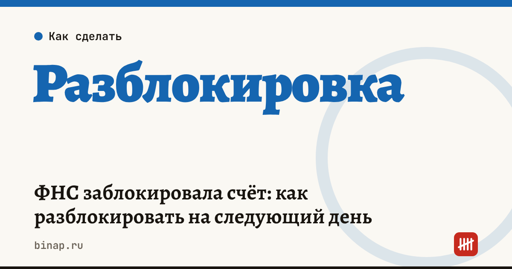

ФНС заблокировала счёт: как разблокировать на следующий день

Если счёт заблокировала налоговая из-за долга, после оплаты банк вернёт доступ к деньгам до конца рабочего дня, следующего за днём, когда в реестре решений о взыскании появится запись о нулевом или положительном сальдо ЕНС. Если причина — неподанная декларация, блокировку снимают не позднее дня, следующего за днём её подачи. Ускорить разблокировку помогают выписка и платёжка, отправленные через личный кабинет.
Коротко
- Основания по ст. 76 НК: неисполненное требование об уплате налога, пеней и штрафа или непредставленная декларация.
- При долге блокируют сумму в размере отрицательного сальдо ЕНС, а не весь счёт.
- За декларацию — если её нет в течение 20 дней после срока подачи.
- Ускорить: выписка и платёжка через личный кабинет; без кабинета — сервис ФНС «Оперативная помощь: разблокировка счёта», статус решения сообщат в течение суток.
- Налоговая блокировка — не то же самое, что блокировка банком по 115-ФЗ: здесь решение принимает инспекция.
Сроки, изменения и разборы для ИП и самозанятых — каждое утро в Telegram и MAX. Подпишитесь, чтобы не пропустить.
Два вида налоговой блокировки
| Причина | Что блокируют | Когда снимут |
|---|---|---|
| Долг по ЕНС | сумму отрицательного сальдо ЕНС | до конца рабочего дня, следующего за днём записи о нулевом или положительном сальдо в реестре |
| Не подана декларация (20 дней после срока) | операции по счёту | не позднее дня, следующего за днём подачи декларации |
Пример (расчёт редакции). На счёте 300 000 ₽, отрицательное сальдо ЕНС — 45 000 ₽. Заблокированы 45 000 ₽, тратить можно 255 000 ₽.
Уплата налогов и платежи, которые по Гражданскому кодексу исполняются раньше налогов, блокировка не останавливает. Пройдёт ли конкретный платёж — например, зарплата, — уточните в банке.
Если банк сам приостановил операции из-за «сомнительных» платежей, это другой случай — план действий в статье банк заблокировал счёт по 115-ФЗ.
Что сделать сейчас
- Узнайте причину: в личном кабинете посмотрите сальдо ЕНС и решения о приостановлении операций.
- Если долг — заплатите через ЕНП всю сумму отрицательного сальдо, а не отдельный налог.
- Сразу отправьте в инспекцию через личный кабинет выписку по счёту и платёжный документ — по электронным обращениям счета разблокируют быстрее (ФНС).
- Нет кабинета — воспользуйтесь сервисом «Оперативная помощь: разблокировка счёта» на сайте ФНС: в течение суток скажут статус решения и как его отменить.
- Если причина — декларация, подайте её в тот же день. Нулевую тоже: штрафа за опоздание с нулевой декларацией больше нет, но блокировка за неё остаётся — подробнее.
- На следующий рабочий день после записи о нулевом сальдо проверьте, снял ли банк ограничение. Если нет — пишите в банк со ссылкой на п. 8 ст. 76 НК.
Как не попасть под блокировку
- Держите запасной счёт в другом банке: если один заблокирован, зарплаты и поставщики не встанут.
- Ставьте сроки уплаты и деклараций в календарь — налоговый календарь ИП.
- Раз в месяц проверяйте сальдо ЕНС: недоимка иногда появляется из-за ошибки в уведомлении.
Открыть запасной расчётный счёт в другом банке: ссылка
Частые вопросы
Заблокируют весь счёт или только сумму долга? При долге — только в размере отрицательного сальдо ЕНС. Остальными деньгами можно пользоваться.
Сколько ждать после оплаты? Банк возобновляет операции до конца рабочего дня, следующего за днём, когда в реестре появилась запись о нулевом или положительном сальдо ЕНС. Документы через личный кабинет ускоряют процесс.
Какие платежи пройдут при блокировке? Уплата налогов и платежи, очерёдность которых по Гражданскому кодексу предшествует налогам. Конкретный платёж уточните в банке.